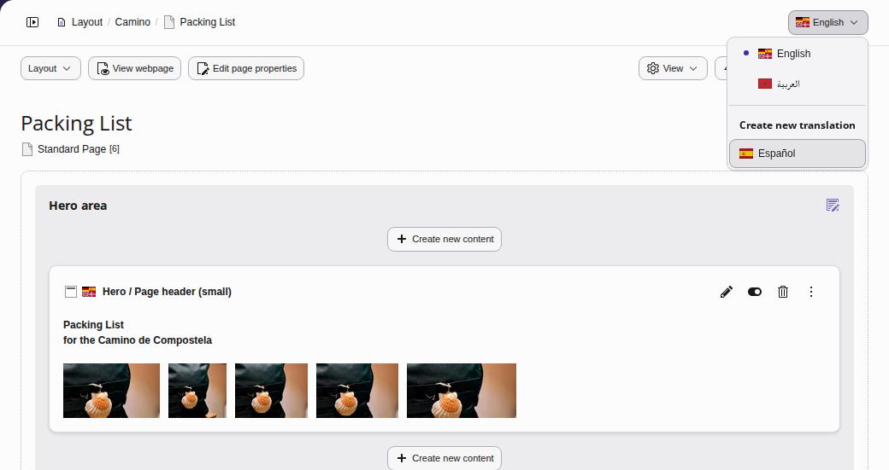
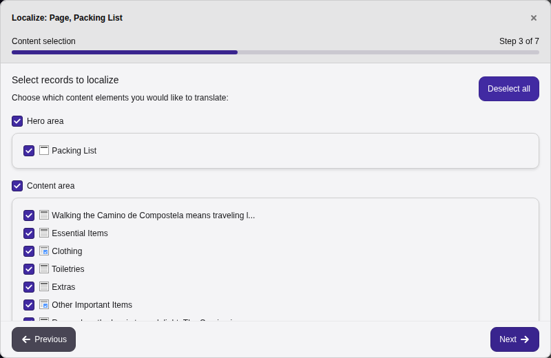
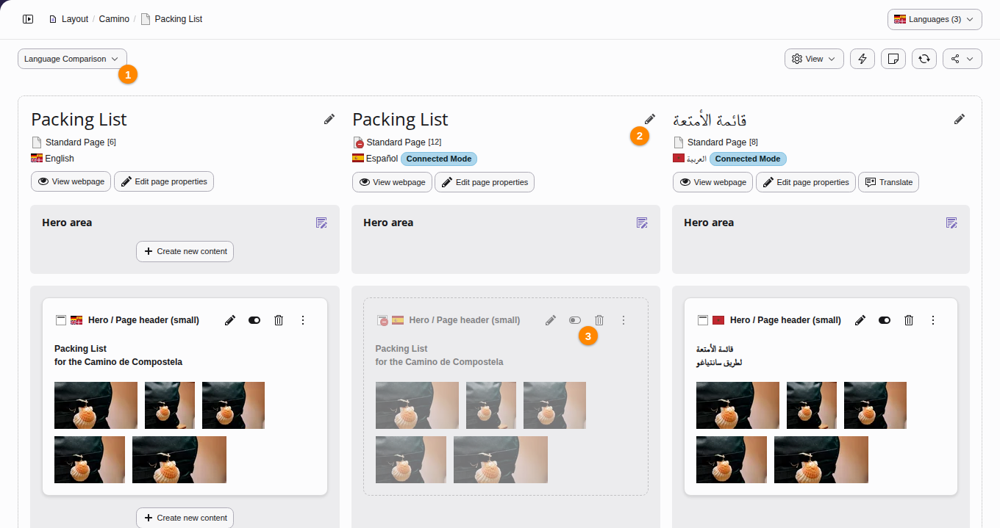
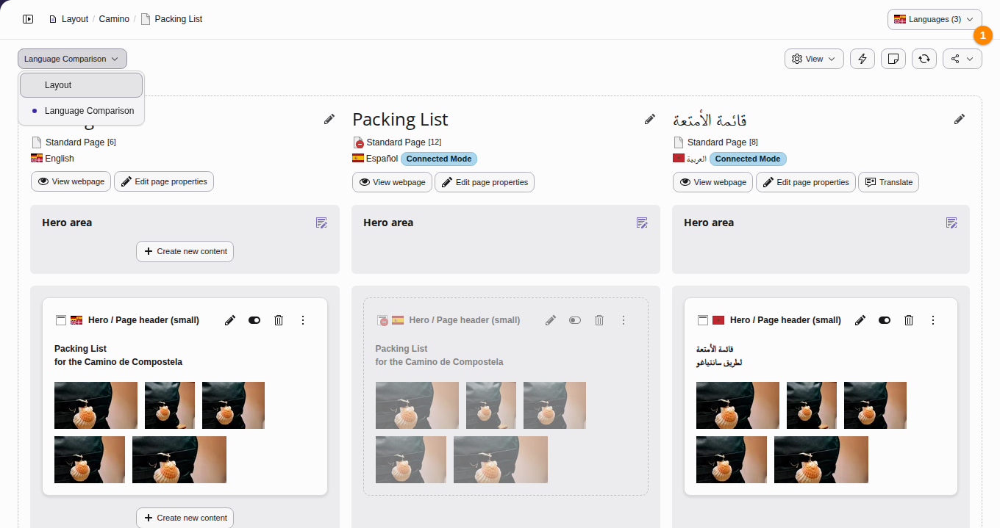

Working with languages
TYPO3 CMS comes with built-in support for managing multi-language sites from a single installation.
See also
More detailed information can be found in the Frontend Localization Guide.
Language configuration
Languages are managed at the site level. To add or configure languages for a site, navigate to Site Management > Sites.
Note
Managing site languages requires administrative privileges. For detailed setup instructions, see the Site Handling documentation.
Translation strategies
When you translate content, there are two modes: a connected mode and an independent mode.
Translate (connected)
Use this mode if your site requires a strict, parallel content structure across all languages. TYPO3 maintains a direct link between the source element and its translation.
- When the source text changes, TYPO3 marks the translation as out of date.
- While you are translating, you can see the changes in the source language next to your text.
- Translation teams can be notified and can track what still needs review.
Copy (independent)
Use this mode if your localized pages require unique layouts, different content structures, or completely independent text.
- Decoupled content: TYPO3 creates a standalone copy of the source content in the target language.
- Structural freedom: No link is maintained, allowing the localized page structure to diverge entirely from the source.
Localizing a page
Follow these steps to translate a page and its content elements.
Create the page translation
- Navigate to the Content > Layout module and select the page you want to translate.
-
Locate the Create new translation dropdown and select the target language that you want to translate into, making sure the target language has been configured in Site Management > Sites. This will open the translation wizard.

-
Click through the translation wizard, choosing a translation mode of Translate or Copy (see Translation strategies) for each content element on the page until you see Localization completed. The last screen of the wizard shows a summary of what will be translated. Click on the Finish button.

-
Click on Language Comparison (1). The screen now displays the versions of the page side by side: the default language version on the left and the translations next to it. Choose the languages to compare in the language menu. Translate page fields such as the title by clicking the pencil icon (2) and typing in your translations. The new content elements in the target language are hidden in the frontend by default. Enable (3) each content element after you have finished translating its text.

Changing the view
Change the view from side-by-side pages to a single language by clicking on Layout mode and then choosing the language you want to see (1).

Buttons to change the view on multilingual pages
The Content > Records module has a language menu as well, see Showing the records of certain languages.
Next steps
The Frontend Localization Guide contains detailed information about setting up a multilingual web site and how to do translation and localization.
Site Handling contains information about how to add more languages to your site configuration.